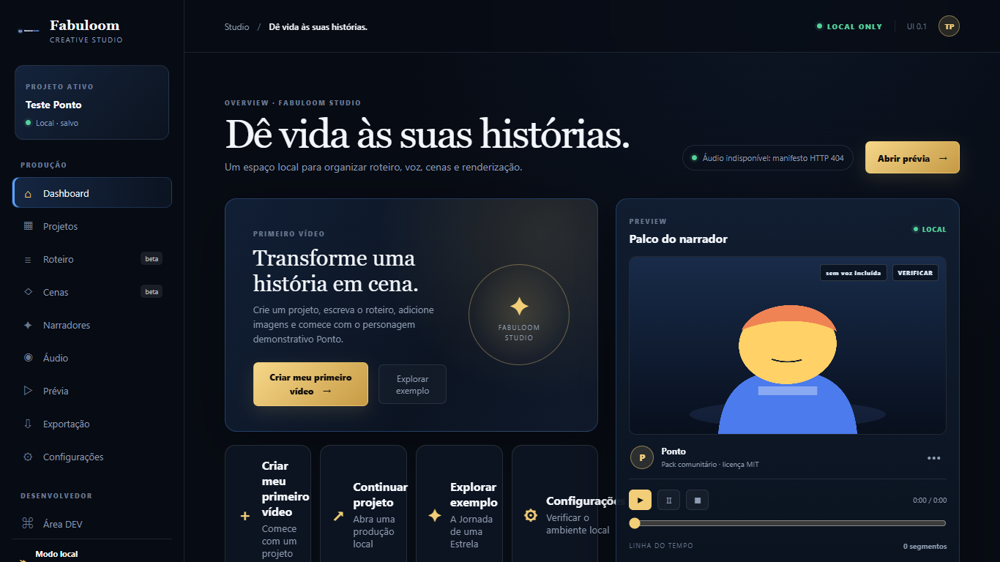
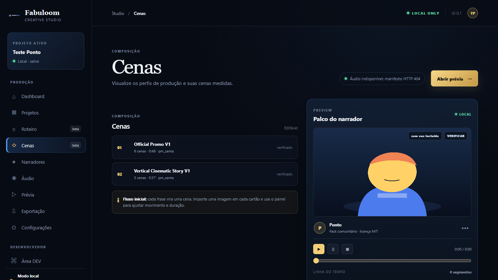
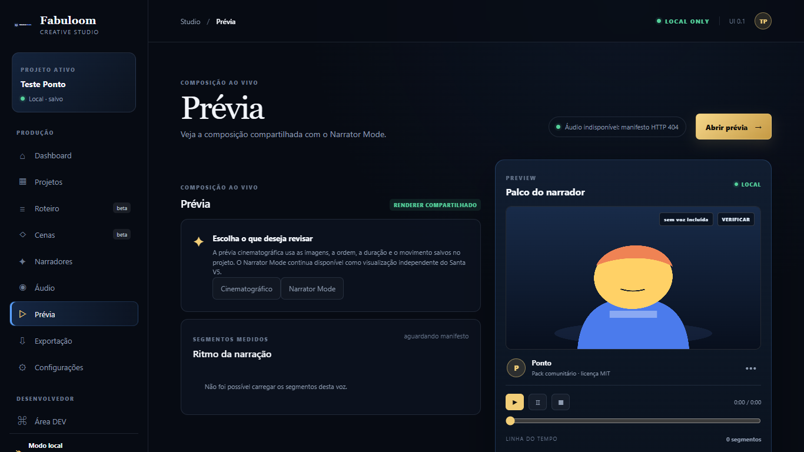

Projects & scripts
Keep a local project, write the story and organize it into editable scenes.
LOCAL-FIRST · OPEN SOURCE
Fabuloom Studio is a local creative workspace for shaping scripts, scenes, characters, camera motion, narration and video export.
0.1.0-alpha · in preparation · not officially released
REAL WORKFLOW
Keep a local project, write the story and organize it into editable scenes.
Use independent character packs, import images and shape camera movement.
Optionally generate narration with Kokoro and export an MP4 through FFmpeg.
REAL STUDIO · PONTO DEMO
These screenshots come from the local Studio interface. The public clean candidate starts with Ponto, an independent MIT-licensed demonstration pack; no proprietary character artwork is shown.



HOW IT WORKS
OPEN SOURCE BOUNDARY
Original Fabuloom code is MIT-licensed. Models, voices, images, character packs and other dependencies retain their own licenses and provenance.
The public source-only candidate does not bundle models, voices, FFmpeg or uncleared Topazioverse artwork. The neutral Ponto pack demonstrates independent character support.
Read the license boundary →CURRENT STATUS
Follow the development branch, read the limitations and help shape the first controlled Alpha tests.
Read installation